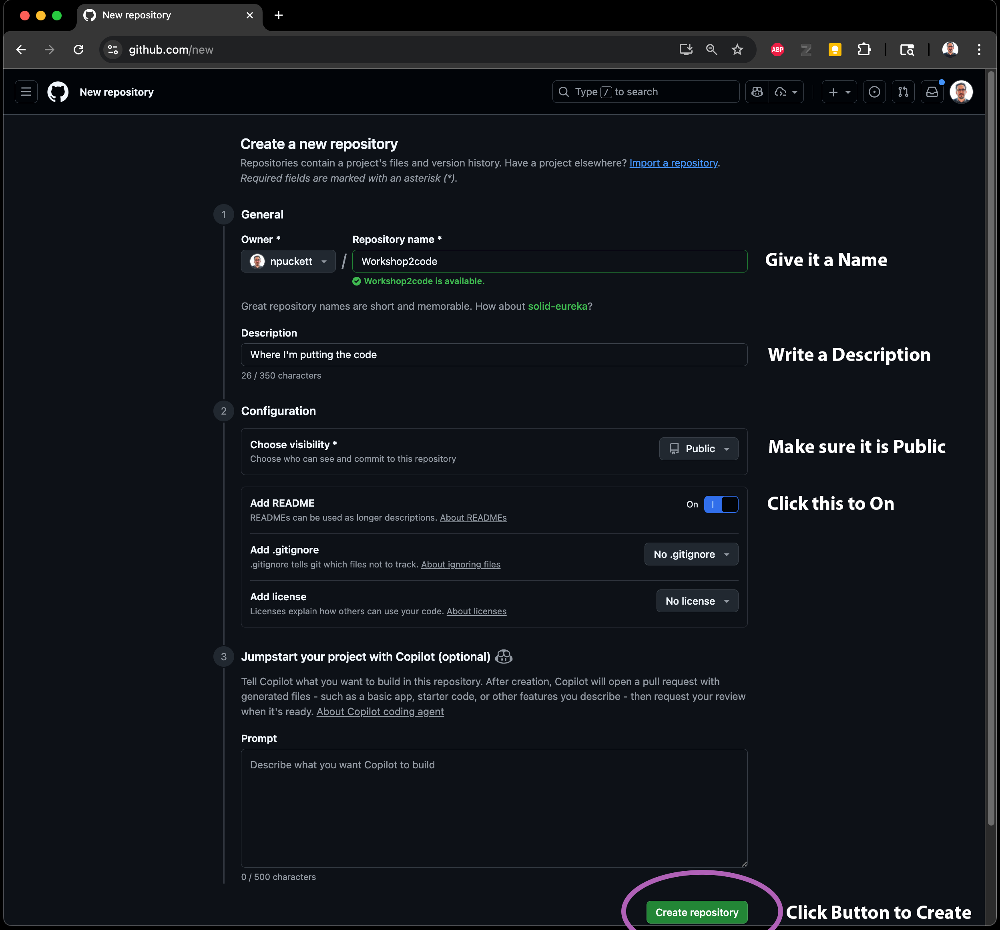

← Back to Home
Setting up a Github Repo for Development and Webhosting
We will be using Github for two functions simultaneously:
- Backup of version management of the code written
- Acting as the web hosting service
Summary
What You'll Create
- A new GitHub repository
- A live website hosted on GitHub Pages
- A local development folder on your computer
Repository Settings
- Public repository with README
- GitHub Pages enabled
- GitHub Actions for deployment
- Static HTML workflow configured
Local Setup
- Repository cloned to your computer
- Folder opened in VS Code
- Ready for development workflow
End Result
- Live website URL:
username.github.io/repo-name
- Automatic deployment when you commit changes
- Version control for your code
Part 1 – Setting up a new Repo for Development
Step 1 – Create a Repo on Github
A repository (repo) is the basic unit of Github. This is the place where all of the code you write will be synced to online. There are many different things you can do with a repository, so it requires several settings to be set to make it optimized for mobile development.
- Go to github.com (sign in if you aren't already)
- Click New Button
- Fill out the properties:
- Name
- Description
- Be sure it is public
- Turn on Add README
- Click Create Repository

Step 2 – Enable Github Pages in the Repo
In addition to using Github to manage our code development, we will also be using it as a webhost for the developed web apps.
- Open the url of the repository you created
- Click:
- Settings at the top of the page
- Pages on the left
- Under Build and deployment click Source dropdown and choose Github Actions
Step 3 – Set up the Github Action
Using a Github Action instead of 'Deploy from branch' builds the updated code much faster with reduced caching issues.

- Once you select Github Actions from the dropdown it will give you 2 options
- Under Static HTML, choose Configure
Step 4 – Commit the Changes to the Repo
To implement this change to the Pages build process, you must commit the static.yml file to the repo.
- When the file opens:
- Do not make any changes to the file
- Press the Commit changes... button in the top right
- When the Commit changes dialog opens:
- Create a Commit message (or use the generated one)
- Click the Commit changes button
Step 5 – Confirm the url of your Pages site
After you commit the changes, it will start create your webspace for this repo. Pages hosted through github are created with this naming pattern:
https://your-github-name.github.io/name-of-your-repository/
You can confirm that it worked by going back to Settings → Pages and seeing that it confirms the site

Part 2 – Clone the Repo to your Computer
Step 1 – Clone the repo from the website
'Cloning' refers to the action of downloading the repo onto your computer so that it can synchronize the files. You can also clone repos that you didn't create, but there is a specific capability when cloning from your own account.
- On the Repo page Click the Code Button and choose Open with Github Desktop
- This will download the repo to your computer and open Github Desktop
Step 2 – Complete the clone using Github Desktop
Github Desktop is used to complete this process of creating a local repo folder on your computer.

- When Github Desktop opens, simply click the Clone button
- At this point the repo is synced locally to its folder on your computer. Unless you specify somewhere else, that is typically:
- Windows:
/My Documents/Github/Repo Name
- MacOS:
/Documents/Github/Repo Name
- If the folder is created in this location, you can close Github Desktop
Step 3 – Open the local repo folder in VS Code
Now that the folder is created, you need to open it in VS Code to start coding.

- To open it in VS Code either navigate File → Open Folder or use the Open Folder Button